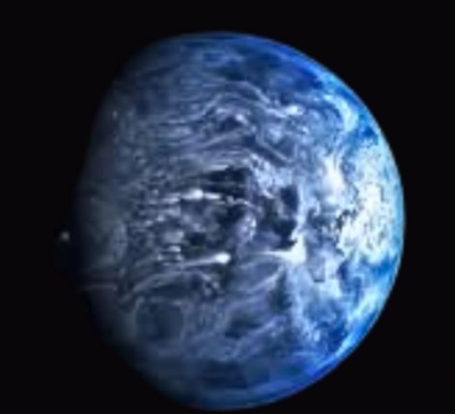
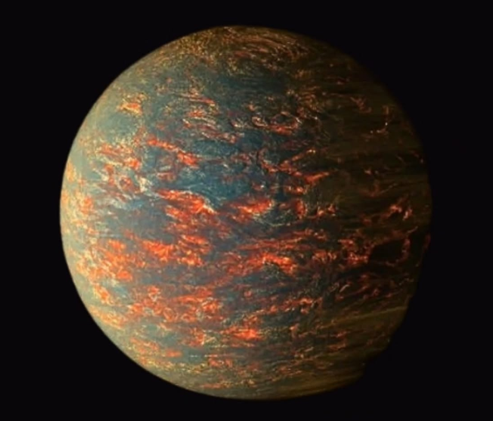
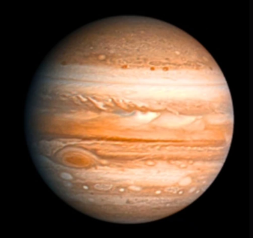
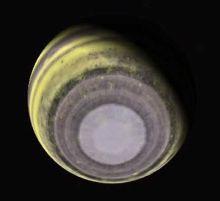
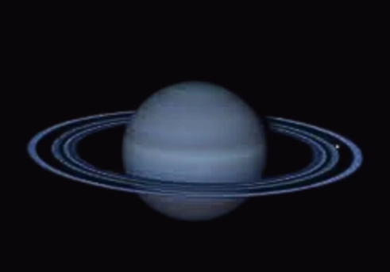
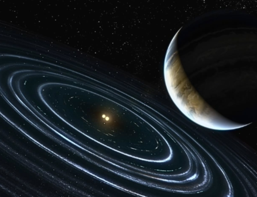
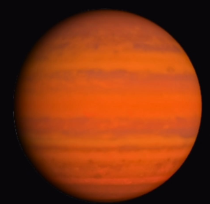
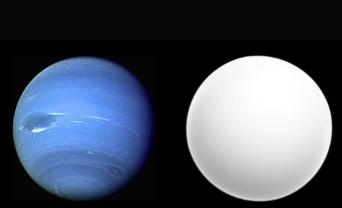

Strangest Worlds in the Milky Way
Winds reaching speeds of over 5,000 mph create one of the most extreme and hostile atmospheres ever recorded. These violent gusts are powerful enough to hurl glass shards sideways through the air, turning the environment into a perilous storm of razor-sharp particles. Such conditions make this alien world not only dangerous but also one of the most fascinating discoveries in planetary science.
This extraordinary carbon-rich planet is believed to be so dense and pressurized that its interior could be made largely of solid diamond. Imagine an entire world shimmering like a cosmic gem—an actual giant diamond drifting through space. It’s a dazzling example of how diverse and astonishing the universe can be, turning science fiction into celestial reality.
Darker than asphalt, this mysterious planet absorbs almost all the light that falls on it, giving it an eerie, light-swallowing appearance. Its ability to trap brightness makes it seem like a mini–black hole planet, hidden in the shadows of space. This unusual trait not only makes it fascinating to astronomers but also one of the darkest worlds ever discovered.
This remarkable planet orbits around two stars, treating its skies to double sunrises and sunsets each day. The phenomenon creates a breathtaking view that feels like it’s straight out of Star Wars, bringing a touch of science fiction into real cosmic landscapes. Such worlds remind us how diverse and cinematic the universe truly is.
This ancient planet is believed to be older than Earth, having formed when the universe was still in its infancy. Its existence offers a rare glimpse into the earliest chapters of cosmic history, carrying with it pure alien vibes. Studying such worlds helps scientists understand how planets began to take shape billions of years ago, long before our own solar system was born.
This distant planet orbits so far from its star that it’s only loosely held by gravity, making it behave almost like a rogue planet drifting freely through space. Its near-independence gives it a mysterious, solitary character, as though it’s carving its own path in the cosmos. Such worlds challenge our understanding of planetary systems and how they evolve on the edge of stability.
On this fiery world, extreme heat is so intense that it vaporizes iron in the atmosphere. As temperatures drop, the vapor condenses and rains back down as molten metal—an otherworldly downpour unlike anything on Earth. This wild and hellish weather makes the planet both dangerous and fascinating, showcasing just how extreme alien climates can be.
On this bizarre planet, water remains frozen solid even under scorching temperatures, thanks to the immense gravitational pressure holding it in place. The result is a phenomenon known as burning ice—a surreal state where ice exists in fiery conditions. This strange mix of heat and frozen matter makes the planet one of the most intriguing and paradoxical worlds ever discovered.
